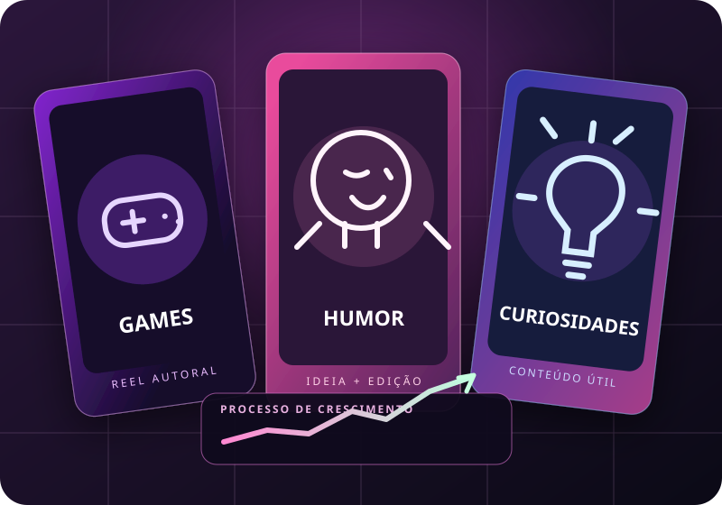

01 ⌕
Descubra o nicho
Defina tema, público e posicionamento — sem depender de mostrar o rosto.
Quer buscar a marca de 100 mil seguidores em semanas? Descubra em 2 minutos qual estratégia de conteúdo faz mais sentido para você — mesmo começando do zero e sem mostrar o rosto.
✓ Gratuito • ✓ Sem cadastro • ✓ Resultado personalizado
9 milhões de visualizações em 2 dias
Resultado relatado pelo criador do método em um de seus vídeos. Não é promessa de resultados.
Copiar o que todo mundo faz não é estratégia. O diferencial está em reconhecer padrões de interesse, criar sua própria abordagem e melhorar a cada publicação.
Defina tema, público e posicionamento — sem depender de mostrar o rosto.
Aprenda a pensar em ganchos, ritmo, edição e legendas que despertem curiosidade real.
Organize publicações, acompanhe métricas e repita o que tiver melhor desempenho.
O criador do @gaelfilantropo relata ter alcançado essa marca em aproximadamente 48 horas. O método ensina como estudar conteúdos com potencial, testar formatos e construir uma rotina própria.
Relato pessoal do autor, não auditado aqui. Resultados de outras contas podem variar muito.
VISUAL ILUSTRATIVOEntendemos seu estágio, nicho e disponibilidade.
Você vê uma sugestão de rotina alinhada ao seu objetivo.
Decida se quer o guia completo por apenas R$ 37.
Este material é independente e não possui vínculo oficial com Instagram ou Meta. 100 mil seguidores é uma meta possível de perseguir, não um resultado garantido nem uma previsão individual.